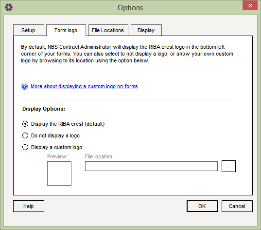

Options: Form Logo tab |
The Options window allows users to configure NBS Contract Administrator to suit their preferences. To open the Options window select Tools > Options from the menu and select the Form logo tab.

NBS Contract Administrator contains electronic versions of the RIBA contract administration forms. These are copyrighted by RIBA Publishing, so the RIBA crest appears at the bottom of some forms (this is set as default). However, we recognise that not all of our subscribers are RIBA members, and may not wish to display the crest. Users of NBS Contract Administrator will be able to choose to issue forms without displaying a logo by selecting the radio button for 'Do not display a logo'.
It is also possible to display a custom logo on the issued forms. To do
this, select the radio button for 'Display a custom logo:' then browse to
the custom logo using the browse button
 .
.
Once the desired option is selected, click on the OK button to save the changes.
See also:
Options - Setup tab
Options - File Locations tab
Options - Display tab